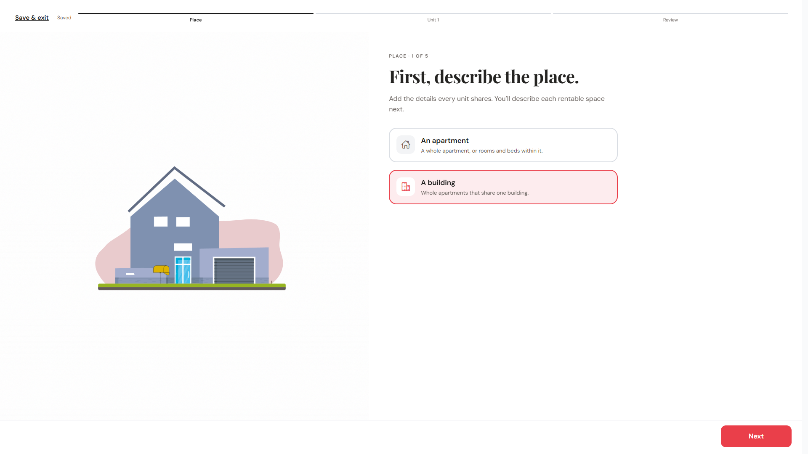
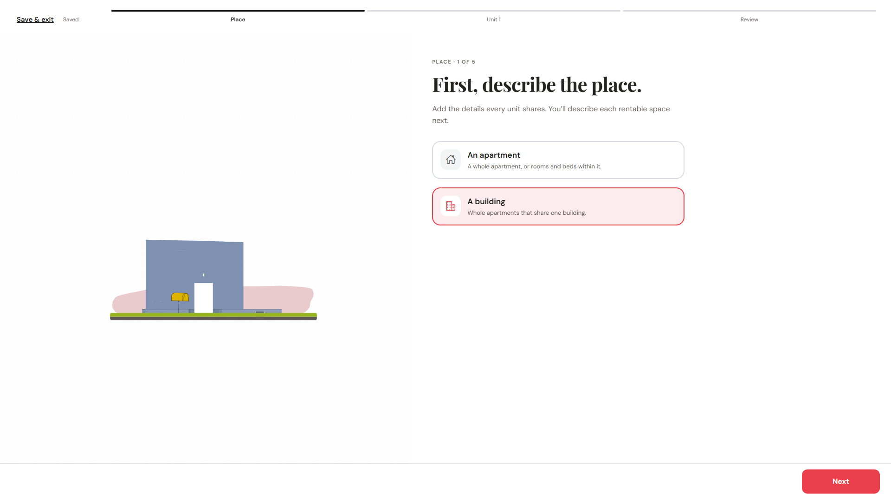
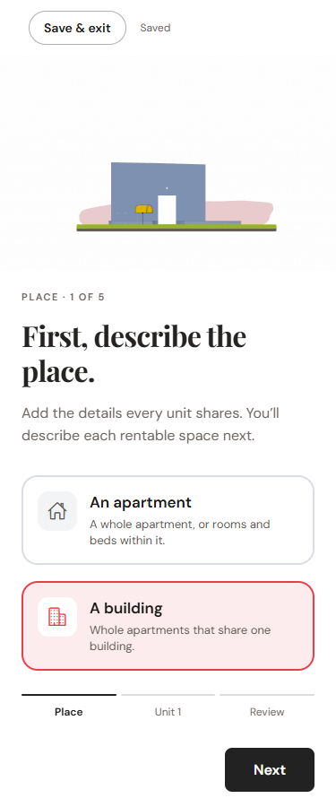

Save & exit, Saved and progress labels share one center line. Saving no longer shifts the tracks. Each question has one short fade, stable focus and prepared artwork.
Open local wizard · Full mobile/desktop screenshots · Normal-motion checks and timing


